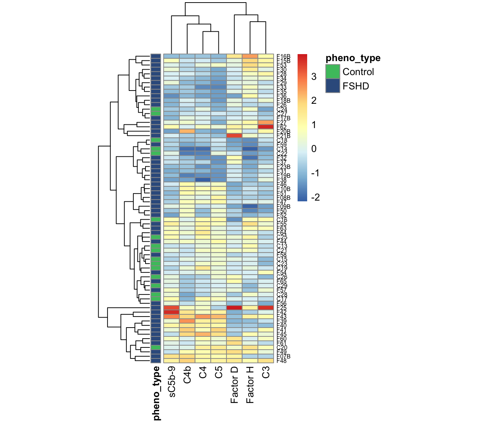

Chapter 3 Combined cohort
We made a discovery cohort by combining 41, 12 plasma collected from first cohort at a follow-up visit, and 17 controls sample from the second cohort. Thess plasma samples were all run in the same assay group. Using this cohort, we explored the complement components that are best in distinguishing FSHD from controls.
Summary
The code chunks here reproduced Fig. 4a-c and Suppl. Fig. 3a-d.
suppressPackageStartupMessages(library(tidyverse))
suppressPackageStartupMessages(library(ggrepel))
suppressPackageStartupMessages(library(kableExtra))
suppressPackageStartupMessages(library(knitr))
suppressPackageStartupMessages(library(ggfortify))
suppressPackageStartupMessages(library(broom))
suppressPackageStartupMessages(library(pheatmap))
suppressPackageStartupMessages(library(viridis))
suppressPackageStartupMessages(library(pheatmap))
suppressPackageStartupMessages(library(latex2exp))
pkg_dir <- "~/CompBio/Wellstone_Plasma_Complement_in_FSHD"
source(file.path(pkg_dir, "scripts", "tools.R"))
fig_dir <- file.path(pkg_dir, "figures")
# get combinded cohort
comb <- get(load(file.path(pkg_dir, "data", "table_3.rda")))
components <- c("Bb", "C2", "C4b", "C5", "C5a", "Factor D", "MBL", "Factor I",
"C1q", "C3", "C4", "Factor B", "Factor H",
"C4a", "sC5b-9")
my_color <- viridis_pal(direction = -1)(8)[c(3, 6)] # control and FSHD
names(my_color) <- c("Control", "FSHD")
mean_color <- "#FF0000"First of all, we tidy the dataset.
comb_tidy <- .tidy_names(comb) %>%
select(`sample ID`, pheno_type, components) %>%
gather(key=complement, value=ml, -`sample ID`, -pheno_type)
comb_tidy_norm <- comb_tidy %>%
group_by(complement) %>%
group_modify( ~.z_norm(.x))3.1 Explore components best distinguish FSHD from controls
3.1.1 \(t\)-test
The \(t\)-test result is similar to that of cohort2 – C4b and C3 are significantly elevated (p-value < 0.05). Factor D and Bb are mildly elevated.
comb_ttest <- comb_tidy %>%
#mutate(pheno_type = factor(pheno_type)) %>%
group_by(complement) %>%
spread(key=pheno_type, ml) %>%
summarize(control_mu = mean(Control, na.rm=TRUE),
control_sd = sd(Control, na.rm=TRUE),
FSHD_mu = mean(FSHD, na.rm=TRUE),
FSHD_sd = sd(FSHD, na.rm=TRUE),
wilcox_test = wilcox.test(FSHD, Control)$p.value,
t_test = t.test(FSHD, Control)$p.value,
t_stats = t.test(FSHD, Control)$statistic) %>%
mutate(log10Pval = -10 * log10(t_test)) %>%
mutate(log10Pval = ifelse(t_stats < 0, -log10Pval, log10Pval)) %>%
mutate(candidate = ifelse(t_test < 0.05, "Yes", "No")) %>%
arrange(desc(t_test)) %>%
mutate(complement=factor(complement, levels=complement)) %>%
mutate(formated_p = format(t_test, digit=1))\(t\)-test barplot (Suppl. Fig. 3a)
ggplot(comb_ttest, aes(x=complement, y=log10Pval, fill=candidate)) +
geom_bar(stat="identity", width=0.7, show.legend=FALSE) +
coord_flip() +
scale_fill_manual(values=c("#999999", "#E69F00")) +
theme_bw() +
labs(title=TeX("Combined cohort: $t$-tests"), x="Complements",
y=TeX("$-10\\log_{10}(\\mathit{p}-val) \\times sign(\\mathit{t}-stats)$")) +
geom_text(aes(label=formated_p), vjust=0.5, hjust=0.5, color="gray10",
position = position_dodge(1), size=3)Figure 3.1: Combind cohort per-compoment t-tests: FSHD vs. controls. * negative -10Log10(p-value) indicates negative t-statistics.
3.1.2 Correlation tests
We performed Pearson Correlatin test among 15 components on FSHDs in the combined cohort and observed seven highly correlated compoments (Pearson > 0.45) and FSHD-associated (based on t-tests):
- C3, FactorH and Factor D (alternative pathway focused). Dropped correlated Factor I and B because they are not relatively associated with FSHD levels
- C4/C4b/C5/sC5b-9 (classical pathway focused)
correlation code reference: https://paulvanderlaken.com/2018/09/10/simpler-correlation-analysis-in-r-using-tidyverse-principles/
Suppl. Fig. 3b
comb_tidy %>% spread(key=complement, value=ml) %>%
filter(pheno_type == "FSHD") %>%
select(components) %>%
corrr::correlate() %>%
corrr::shave() %>%
corrr::rplot(shape = 19, colors = c("red", "green")) +
theme(axis.text.x = element_text(angle = 90, hjust=0.95, vjust=0.2),
legend.position="right")Figure 3.2: The correlation matrix among the complement components.
sub_alternative <- c("Factor H", "Factor D", "C3")
sub_classical <- c("C4", "C4b", "C5", "sC5b-9")
panel_7 <- c(sub_alternative, sub_classical)Network focused on the seven selected components: Suppl. Fig. 3c.
comb_tidy %>% spread(key=complement, value=ml) %>%
filter(pheno_type == "FSHD") %>%
select(all_of(panel_7) )%>%
corrr::correlate(., method="pearson", use="pairwise.complete.obs") %>%
corrr::network_plot(colors = c("red", "green"), legend=FALSE) Figure 3.3: Correlation network among the seven highly correlated complement components. The scaled color represents the Pearson correlation.
3.2 Panel of seven - Classification and composite z-score
The correlation and t-tests together revealed seven complement components (Factor H, Factor D, C3, C4, C4b, C5, sC5b-9) that are showing stronger association with FHSD than other components. Here we used these seven complement levels to (1) classify the FSHD samples by hierarchical cluster analysis and (2) construct per-sample composite z-scores.
The code chunks below made Suppl. Fig. 3d-g (boxplots, heatmap, waterfall, composite z-score boxplot).
3.2.1 Boxplot by sample groups
boxplot:
comb_tidy %>%
filter(complement %in% all_of(panel_7)) %>%
ggplot(aes(x=pheno_type, y=ml)) +
geom_violin(aes(color=pheno_type)) +
geom_dotplot(binaxis='y',
stackdir='center', dotsize=1,
aes(color=pheno_type, fill=pheno_type),
alpha=0.7, show.legend=FALSE) +
stat_summary(fun=mean, geom="point", shape=23, size=2.5,
color=mean_color) +
theme_minimal() +
facet_wrap(~ complement , scale="free", nrow=2) +
scale_fill_manual(values=my_color) +
scale_color_manual(values=my_color) +
theme(legend.position="none",
axis.title.x = element_blank()) +
labs(y=expression(mu*g / ml)) Figure 3.4: Violin plot of the panel of seven by sample groups.
3.2.2 Heatmap/clustering
Using hierarchical cluster and heatmap visualization, we observed a subset of 12 FSHD samples have elevated levels in the classical pathway and terminal components (C4, C4b, C5, and sC5b-9), and 7 in alternative pathway (C3, Factor H/D). Together these 19 FSHDs are labelled as “elevated” FSHD. Based on the panel of 7 factors, we made heatmap showing the clusters and PCA depicting the simple sample distance among all the samples.
Note Control C20 (ID=“3170”) shows the characteristics of elevated FSHDs, and cluster with the FHSDs.
# the rows could be re-arrange by defined clusters (cold fhsd, hot on terminal and alternative)
norm_data <- comb_tidy_norm %>% select(-ml) %>%
spread(complement, ml_norm)
mat <- norm_data %>% select(all_of(panel_7)) %>% as.matrix()
rownames(mat) <- norm_data$`sample ID`
annotation_row <- data.frame(pheno_type=factor(pull(norm_data, `pheno_type`)))
rownames(annotation_row) <- rownames(mat)
annotation_colors <- list(pheno_type=my_color)
pheatmap(mat, annotation_row=annotation_row,
scale="none", cellwidth=16,
fontsize=10, fontsize_row=6, angle_col=90,
annotation_colors=annotation_colors)
Rearrange samples by clusters Rearrange the samples based on the FSHD elevation in classical/terminal and alternative pathways.
# rearrange heatmap by the clust
hc <- hclust(dist(mat))
branch <- cutree(hc, k=6)
df <- tibble(lables=hc$labels, order=hc$order, tree=branch) %>%
mutate(tree=ifelse(lables %in% c("F15B", "F16B", "F53"),
3.5, tree)) %>%
arrange(order) %>%
mutate(tree=factor(tree, levels=c(6, 3, 5, 3.5, 1, 2, 4))) %>%
arrange(tree)
# define gaps_row
gaps_row <- df %>% group_by(tree) %>% summarise(n=dplyr::n()) %>% mutate(gaps=cumsum(n))
annotation_colors <- list(pheno_type=my_color)
pheatmap(mat=mat[df$lables, ],
annotation_row=annotation_row[df$lables, , drop=FALSE],
annotation_colors=annotation_colors,
scale="none", cellwidth=16, gaps_row=c(13, 17, 20, 70),
cluster_rows=FALSE, angle_col=90,
fontsize=10, fontsize_row=6)Figure 3.5: Heatmap of panel 7 (Suppl Fig 3e. Arrange the samples by clusters of elevated FSHDs in different pathways.
pheatmap(mat=mat[df$lables, ],
annotation_row=annotation_row[df$lables, , drop=FALSE],
annotation_colors=annotation_colors,
scale="none", cellwidth=16, gaps_row=c(13, 17, 20, 70),
cluster_rows=FALSE,
fontsize=10, fontsize_row=6, slient=TRUE, angle_col=90,
file=file.path(pkg_dir, "figures",
"comb-cohort-heatmap-panel7-arranged.pdf"))3.2.3 Composite z-score
The per-sample composite z-score is the sum of z-scores of selected complement components: \(S_i = \sum_{i=1}^{m} Z_{i,j}\), where \(j\) denotes the complement, m the number of selected complements, and \(Z_{i,j}\) the normalized value (z-score). It gives a 1D projection of how each sample deviates up or down from each other. Using this score, we can observe difference between FSHD and controls.
sample_zscore <- comb_tidy_norm %>%
filter(complement %in% all_of(panel_7)) %>%
group_by(`sample ID`) %>%
summarise(composite_zscore=sum(ml_norm, na.rm=TRUE)) %>%
left_join(dplyr::select(comb, `sample ID`, `pheno type`), by="sample ID") %>%
arrange(desc(composite_zscore)) %>%
dplyr::mutate(`sample ID` = factor(`sample ID`, levels=`sample ID`))
sample_zscore_7 <- sample_zscore
ggplot(sample_zscore,
aes(x=`sample ID`, y=composite_zscore, fill=`pheno type`)) +
geom_bar(stat="identity") +
theme_minimal() +
scale_fill_manual(values=my_color) +
labs(y="composite z-score (7)") +
theme(axis.text.x = element_text(angle = 90, size=7),
axis.title.x=element_blank(),
legend.key.size = unit(0.4, 'cm'),
legend.position = c(0.9, 0.8),
panel.grid.minor = element_blank())Figure 3.6: Composite z-score usign seven selected complement components.
#panel.grid.major = element_blank())
ggsave(file=file.path(pkg_dir, "figures",
"comb-cohort-composite-zscore-waterfall-panel7.pdf"),
width=6.5, height=3) t-test between FSHD and controls
pval <- sample_zscore %>%
spread(key=`pheno type`, composite_zscore) %>%
summarize(pval=t.test(FSHD, Control)$p.value) %>% pull(pval)
ggplot(sample_zscore, aes(x=`pheno type`, y=composite_zscore)) +
geom_boxplot(aes(color=`pheno type`), width=0.7, outlier.shape=NA,
show.legend = FALSE) +
theme_minimal() +
theme(axis.title.x = element_blank()) +
scale_color_manual(values=my_color) +
labs(y="Composite z-score (7)") +
annotate("text", x = 1.5, y = 8.75, vjust=0.5,
label = paste0("pval=", format(pval, digits=2)))Figure 3.7: Composite zscore by sample groups (Suppl. Fig. 3f).
Visualization by PCA ??
3.3 Panel of four - Classification and composite z-scores
We selected four best componets out of the panel of seven that are most associated with FSHD (C3, C4b, Facter D and sC5b-9). We performed similar analysis as above and made boxplots of panel of four, heatmap/cluster, waterfall and boxplots of composite z-score (4).
The code chunks below made Fig. 4a-d.
3.3.1 Boxplot by sample groups
boxplot:
comb_tidy %>%
filter(complement %in% all_of(panel_4)) %>%
ggplot(aes(x=pheno_type, y=ml)) +
geom_violin(aes(color=pheno_type)) +
geom_dotplot(binaxis='y',
stackdir='center', dotsize=1,
aes(color=pheno_type, fill=pheno_type),
alpha=0.7, show.legend=FALSE) +
stat_summary(fun=mean, geom="point", shape=23, size=2.5,
color=mean_color) +
theme_minimal() +
facet_wrap(~ complement , scale="free", nrow=1) +
scale_fill_manual(values=my_color) +
scale_color_manual(values=my_color) +
theme(legend.position="none",
axis.title.x = element_blank()) +
labs(y=expression(mu*g / ml),
title="Combind cohort: selected panel") Figure 3.8: Violin plot of the panel of four by sample groups.
3.3.2 Heatmap/clustering
The hiearchical clustering is able to distinguish elevated FSHDs from controls and other “cold” FSHDs.
# the rows could be re-arrange by defined clusters (cold fhsd, hot on terminal and alternative)
norm_data <- comb_tidy_norm %>% select(-ml) %>%
spread(complement, ml_norm)
mat <- norm_data %>% select(all_of(panel_4)) %>% as.matrix()
rownames(mat) <- norm_data$`sample ID`
annotation_row <- data.frame(pheno_type=factor(pull(norm_data, `pheno_type`)))
rownames(annotation_row) <- rownames(mat)
annotation_colors <- list(pheno_type=my_color)
phm <- pheatmap(mat, annotation_row=annotation_row,
scale="none", cellwidth=16,
fontsize=10, fontsize_row=6, angle_col = 90,
annotation_colors=annotation_colors)Figure 3.9: Heatmap and clustering using panel of four components.
pheatmap(mat[phm$tree_row$order, ], annotation_row=annotation_row,
scale="none", cellwidth=16,
gaps_row = c(17, 70), treeheight_row=0,
annotation_colors=annotation_colors,
fontsize=10, fontsize_row=6, slient=TRUE,
cluster_rows = FALSE, angle_col=90,
file=file.path(pkg_dir, "figures",
"comb-cohort-heatmap-panel4-arranged.pdf"))3.3.3 Composite z-score
sample_zscore <- comb_tidy_norm %>%
filter(complement %in% all_of(panel_4)) %>%
group_by(`sample ID`) %>%
summarise(composite_zscore=sum(ml_norm, na.rm=TRUE)) %>%
left_join(dplyr::select(comb, `sample ID`, `pheno type`), by="sample ID") %>%
arrange(desc(composite_zscore)) %>%
dplyr::mutate(`sample ID` = factor(`sample ID`, levels=`sample ID`))
sample_zscore_4 <- sample_zscore
ggplot(sample_zscore,
aes(x=`sample ID`, y=composite_zscore, fill=`pheno type`)) +
geom_bar(stat="identity") +
theme_minimal() +
scale_fill_manual(values=my_color) +
labs(y="composite z-score (4)") +
theme(axis.text.x = element_text(angle = 90, size=7),
axis.title.x=element_blank(),
legend.key.size = unit(0.4, 'cm'),
legend.position = c(0.9, 0.8),
panel.grid.minor = element_blank())Figure 3.10: Composite z-score usign seven selected complement components.
#panel.grid.major = element_blank())
ggsave(file=file.path(pkg_dir, "figures",
"comb-cohort-composite-zscore-waterfall-panel4.pdf"),
width=6.5, height=2.5) t-test between FSHD and controls
pval <- sample_zscore %>%
spread(key=`pheno type`, composite_zscore) %>%
summarize(pval=t.test(FSHD, Control)$p.value) %>% pull(pval)
ggplot(sample_zscore, aes(x=`pheno type`, y=composite_zscore)) +
geom_boxplot(aes(color=`pheno type`), width=0.7, outlier.shape=NA,
show.legend = FALSE) +
theme_minimal() +
theme(axis.title.x = element_blank()) +
scale_color_manual(values=my_color) +
labs(y="Composite z-score (4)") +
annotate("text", x = 1.5, y = 8.75, vjust=0.5,
label = paste0("pval=", format(pval, digits=2)))Figure 3.11: Boxplot of composite z-score by sample groups
3.4 Clinical severity score and D4Z4 repeats
We determined whether Clinical Severity Score (CSS) or D4Z4 repeat number are correlated with complement levels by using Pearson correlation test. Code chunks below yield the results.
3.4.1 CSS vs. composite z-score
tmp <- .tidy_names(comb) %>% select(`sample ID`, CSS) %>%
left_join(sample_zscore, by="sample ID") %>%
filter(!is.na(CSS))
# CSS vs. composite_zscore (4)
cor(tmp$CSS, tmp$composite_zscore) ## [1] 0.19536053.4.2 D4Z4 vs. composite z-score
tmp <- .tidy_names(comb) %>% select(`sample ID`, `D4Z4 Repeats`) %>%
left_join(sample_zscore, by="sample ID") %>%
filter(!is.na(`D4Z4 Repeats`))
# CSS vs. composite_zscore (4)
cor(tmp$`D4Z4 Repeats`, tmp$composite_zscore) ## [1] -0.1356572